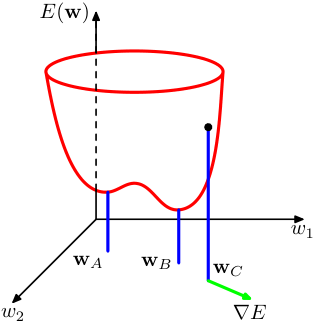
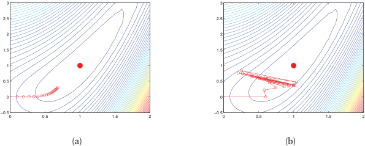
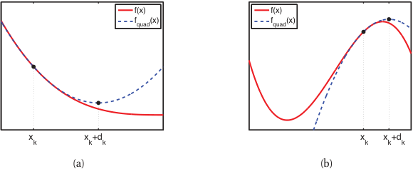
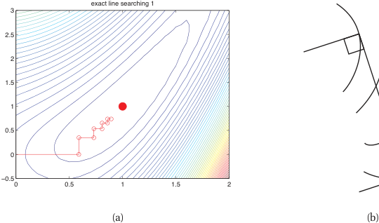
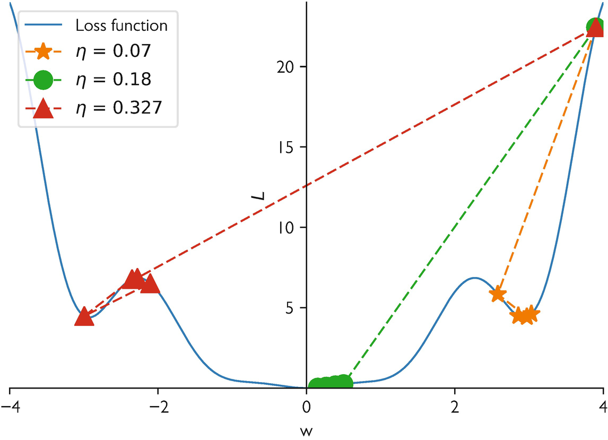
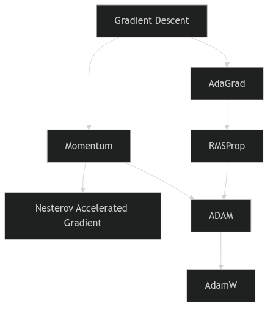
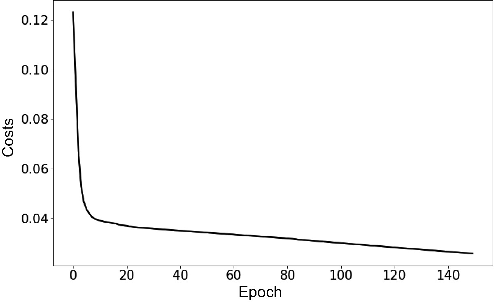
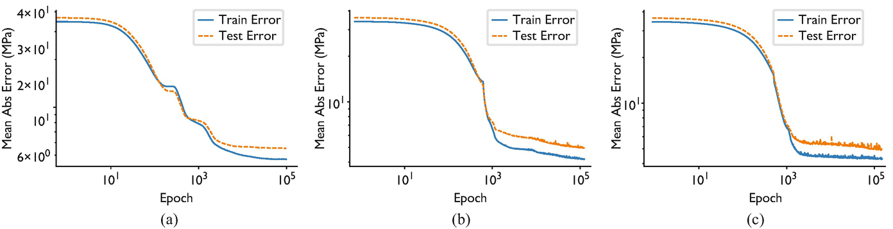

viewof lr_saddle = Inputs.range([0.01, 0.5], {value: 0.1, step: 0.01, label: "Learning Rate (η)"});
viewof noise_saddle = Inputs.range([0, 0.5], {value: 0.0, step: 0.01, label: "Gradient Noise StdDev"});
viewof steps_saddle = Inputs.range([1, 100], {value: 20, step: 1, label: "Steps"});
viewof btn_saddle = Inputs.button("Reset / Re-run");Mathematical Foundations of AI & ML
Unit 6: Loss Landscapes and Optimization Behavior
Prof. Dr. Philipp Pelz
FAU Erlangen-Nürnberg


Recap: gradient descent as parameter update
- Core update rule: \(\boldsymbol{\theta}^{(t+1)} = \boldsymbol{\theta}^{(t)} - \eta \mathbf{g}^{(t)}\)
- The learning rate \(\eta\) controls step size.
- Convergence depends on landscape properties — not just the gradient direction (McClarren 2021).
Learning outcomes for Unit 6
By the end of this lecture, students can:
- interpret the Hessian matrix \(\mathbf{H}\) and its eigenvalues as curvature descriptors,
- explain why saddle points dominate over local minima in high dimensions,
- compare momentum, AdaGrad, RMSProp, and ADAM mechanistically,
- relate flat vs sharp minima to generalization performance.
The loss landscape metaphor
- The cost function \(J(\boldsymbol{\theta})\) defines a surface over the parameter space \(\mathbb{R}^p\).
- Peaks, valleys, saddle points, and plateaus characterize this topography.
- Training is a trajectory on this surface, guided by gradient information.

Visualizing 1D and 2D loss surfaces
- In 1D: loss curve with clear minima and maxima.
- In 2D: contour plots reveal elongated valleys and saddle structures.
- Real networks live in \(\mathbb{R}^{10^6}\) or higher — visualization is always a projection (Goodfellow et al. 2016).

Critical points: gradient equals zero
- A critical point satisfies \(\mathbf{g} = \mathbf{0}\).
- Classification requires second-order information: the Hessian matrix \(\mathbf{H}\).
- Minimum, maximum, or saddle point depends on the sign pattern of \(\mathbf{H}\) eigenvalues.
The Hessian matrix: definition
- The Hessian \(\mathbf{H}\) is the matrix of second-order partial derivatives:
\[ H_{ij} = \frac{\partial^2 J}{\partial \theta_i \partial \theta_j} \]
- \(\mathbf{H}\) is symmetric for smooth loss functions (Schwarz’s theorem).
- Its eigenvalues and eigenvectors encode curvature magnitude and direction.
Eigenvalues of the Hessian
- Large eigenvalue: the loss changes rapidly along the corresponding eigenvector direction (steep curvature).
- Small eigenvalue: the loss is nearly flat along that direction.
- Negative eigenvalue: the critical point is a saddle point along that direction.

Why local minima are rare in high dimensions
- For a critical point to be a local minimum, all \(\mathbf{H}\) eigenvalues must be positive.
- With \(p\) parameters, each eigenvalue is independently likely to be positive or negative.
- The probability of all-positive eigenvalues decreases exponentially with \(p\) (Goodfellow et al. 2016).
Saddle points dominate the landscape
- In high dimensions, most critical points are saddle points, not minima.
- Random matrix theory predicts: the fraction of negative eigenvalues concentrates near 0.5 at high-loss critical points.
- Low-loss critical points tend to have mostly positive eigenvalues — the “good” minima region.
Saddle point dynamics under gradient descent
- Near a saddle point, the gradient \(\mathbf{g}\) is small in all directions — training slows dramatically.
- Escape is possible along negative-curvature directions, but can take many iterations.
- Gradient noise from mini-batches can help escape saddle points faster.
gd_traj_saddle = {
btn_saddle;
let x = 0; // Exactly zero gradient in x direction initially!
let y = 0.1;
let traj = [{x: x, y: y, iter: 0}];
const randn = () => Math.sqrt(-2.0 * Math.log(Math.random())) * Math.cos(2.0 * Math.PI * Math.random());
for(let i=1; i<=steps_saddle; i++) {
let gx = 2 * x + noise_saddle * randn();
let gy = -2 * y + noise_saddle * randn();
x = x - lr_saddle * gx;
y = y - lr_saddle * gy;
traj.push({x: x, y: y, iter: i});
}
return traj;
}
grid_saddle = {
let pts = [];
for(let i=-2; i<=2; i+=0.1) {
for(let j=-2; j<=2; j+=0.1) {
pts.push({x: i, y: j, z: (i*i - j*j)});
}
}
return pts;
}
plot_saddle = Plot.plot({
width: 1200, height: 700,
x: {domain: [-2, 2], label: "Parameter x (Positive Curvature)"},
y: {domain: [-2, 2], label: "Parameter y (Negative Curvature)"},
color: {scheme: "RdBu", legend: false},
marks: [
Plot.contour(grid_saddle, {x: "x", y: "y", fill: "z", thresholds: 20, stroke: "black", strokeOpacity: 0.2}),
Plot.line(gd_traj_saddle, {x: "x", y: "y", stroke: "lime", strokeWidth: 2}),
Plot.dot(gd_traj_saddle, {x: "x", y: "y", fill: "black", r: 3})
]
})Plateaus and vanishing gradients
- Plateaus are extended flat regions where \(\|\mathbf{g}\| \approx 0\).
- Common with saturating activation functions (sigmoid, tanh) in deep networks.
- Training appears stuck — but the model has not converged to a useful solution.
Loss surface of linear networks
- Even linear networks \(f = W_L \cdots W_1 x\) have non-convex loss landscapes.
- Saddle points arise from the product structure of weight matrices.
- Analytical tractability makes them a useful theoretical testbed.
Exploding gradients and gradient clipping
- The symmetric failure to vanishing gradients: through deep or recurrent layers, the gradient is a product of Jacobians — if their spectral norms exceed 1, \(\|\mathbf{g}\|\) grows exponentially.
- Geometrically: the loss surface has cliffs (steep walls); a normal step off a cliff sends parameters to infinity →
NaN. - Norm clipping (Pascanu et al. 2013): if \(\|\mathbf{g}\| > c\), rescale \[ \mathbf{g} \leftarrow c\,\frac{\mathbf{g}}{\|\mathbf{g}\|} \]
- Direction preserved, step magnitude capped. Typical \(c \approx 1.0\); near-universal in transformer / RNN / LLM training.
- Diagnose by monitoring the global gradient norm — spikes precede divergence by a few steps.
- Per-coordinate value clipping exists but is rarely used (it distorts the descent direction).
- Clipping is a band-aid for landscape cliffs, not a substitute for good initialization or normalization.
Initialization: where you start on the landscape
- The optimizer is local — the starting point decides which basin you fall into and whether gradients survive layer 1.
- Goal: keep activation and gradient variance roughly constant across depth (no exponential shrink/blow-up).
- Xavier/Glorot (Glorot and Bengio 2010) (tanh/linear): \(\operatorname{Var}(W)=\dfrac{2}{n_\text{in}+n_\text{out}}\)
- He/Kaiming (He et al. 2015) (ReLU): \(\operatorname{Var}(W)=\dfrac{2}{n_\text{in}}\) — the factor 2 compensates ReLU killing half the units.
- All-zeros / all-equal → symmetry: every unit learns the identical function. Random breaking is mandatory.
- Too large → exploding activations/saturation; too small → vanishing signal — both stall training before the optimizer matters.
- Modern recipes lean on init + normalization + residuals jointly (e.g. residual-aware scaling for deep transformers).
- A bad init can make even AdamW fail; a good init is the cheapest conditioning fix there is.
Empirical observations: loss surfaces of deep networks
- Many local minima exist, but they tend to have similar loss values.
- The loss at local minima decreases as network width increases.
- Sharp minima coexist with flat minima — optimizer choice determines which is found (Goodfellow et al. 2016).
Visualizing real loss landscapes
- A network has \(10^6\)–\(10^{11}\) parameters — every “landscape picture” is a 2D projection through that space.
- Naive random-direction slices are misleading: ReLU networks are scale-invariant, so you can make any minimum look arbitrarily sharp or flat just by rescaling weights.
- Filter-normalized directions (Li et al. 2018): normalize each random direction filter-wise to the weight norm → slices become comparable across models.
- Trajectory-informed directions (Ding et al. 2023): pick the projection plane from the optimization path itself (PCA of training checkpoints) instead of random directions → the slice actually contains the route SGD took, not an arbitrary cross-section.
What the corrected plots reveal
- Skip connections (ResNets) and normalization layers dramatically smooth an otherwise chaotic surface.
- Wider networks → visibly flatter, more convex-looking minima.
- The famous ResNet-56 “with vs without skip connections” landscape is the canonical image of this effect.
- Caveat: even filter-normalized slices are still 2D shadows — useful intuition, not ground truth.
Role of overparameterization
- Networks with more parameters than training samples create degenerate solution manifolds.
- Connected low-loss valleys allow smooth interpolation between solutions.
- Overparameterization paradoxically helps optimization by removing barriers.
Symmetry and mode connectivity
- Permuting hidden units produces an equivalent network with identical loss.
- This creates combinatorially many equivalent minima in weight space.
- Recent work shows that minima found by different training runs can be connected by low-loss paths.
Landscape pathologies summary
- Ill-conditioning: oscillation + slow convergence; diagnosed by large \(\kappa(\mathbf{H})\).
- Saddle points: near-zero gradient \(\mathbf{g}\) in all directions; escape requires curvature exploitation.
- Plateaus: extended flat regions; caused by saturating activations.
- Sharp minima: low training loss but poor generalization; sensitive to perturbation.
Checkpoint: identify the pathology
- Scenario A: training loss oscillates wildly but does not decrease — ill-conditioning + learning rate too large.
- Scenario B: training loss flatlines at a high value — saddle point or plateau.
- Scenario C: training loss is very low but test loss is high — sharp minimum / overfitting.
Vanilla GD on ill-conditioned surface
- On an elongated bowl, GD zig-zags across the narrow direction.
- Progress along the long axis is extremely slow.
- The optimal learning rate is limited by the steepest direction: \(\eta < 2/\lambda_{\max}\).
- We will see this behavior visualized alongside momentum/RMSProp/ADAM in the optimizer comparison plot below.

Momentum: physics analogy
- Think of the parameter vector \(\boldsymbol{\theta}\) as a ball rolling on the loss surface.
- The ball accumulates velocity \(\mathbf{v}\) in directions of consistent gradient.
- Oscillations in steep directions are damped because velocity averages out sign changes (McClarren 2021).

Momentum update rule
- Velocity update: \(\mathbf{v}^{(t+1)} = \alpha \mathbf{v}^{(t)} - \eta \mathbf{g}^{(t)}\)
- Parameter update: \(\boldsymbol{\theta}^{(t+1)} = \boldsymbol{\theta}^{(t)} + \mathbf{v}^{(t+1)}\)
- Typical default: \(\alpha = 0.9\); controls how much history is retained.
Momentum on the elongated bowl
- Oscillations across the narrow direction cancel in the velocity average.
- Net velocity builds up along the valley floor.
- Convergence is dramatically faster compared to vanilla GD — the multi-optimizer interactive below makes this concrete.
Nesterov accelerated gradient
- Key idea: evaluate the gradient at the look-ahead position \(\boldsymbol{\theta} + \alpha \mathbf{v}\).
- Provides a correction before committing to the full momentum step.
- Achieves provably better convergence rate \(O(1/t^2)\) vs \(O(1/t)\) for convex problems.
Momentum vs Nesterov: comparison
- Both reduce oscillations and accelerate convergence on ill-conditioned surfaces.
- Nesterov tends to overshoot less because of the look-ahead correction.
- In practice, the difference is modest for deep learning; both are widely used.
Learning rate as the most critical hyperparameter
- The learning rate \(\eta\) governs the fundamental speed–stability tradeoff.
- Too large: divergence or chaotic oscillation.
- Too small: convergence to nearest minimum, which may be suboptimal (Neuer et al. 2024).
Learning rate sensitivity demonstration
- Same model, same data, three learning rates: training curves diverge dramatically.
- This interactive 1D example (\(f(x) = x^4 - 2x^2 + \frac{1}{2}x\)) shows how \(\eta\) controls convergence, oscillation, or divergence.
- Try different learning rates and observe the optimization trajectory.
gd_trajectory = {
reset_btn_1d; // react to button
let x = 0; // starting point
let traj = [{x: x, iter: 0}];
for(let i=1; i<=epochs_1d; i++) {
let grad = 4 * Math.pow(x, 3) - 4 * x + 0.5;
x = x - lr_1d * grad;
if(x > 2 || x < -2 || isNaN(x)) { x = (x>0? 2: -2); traj.push({x: x, iter: i}); break; }
traj.push({x: x, iter: i});
}
return traj;
}
x_range = d3.range(-1.5, 1.6, 0.05)
plot_func_1d = Plot.plot({
width: 800, height: 400,
x: {domain: [-1.5, 1.5], label: "Parameter x"},
y: {domain: [-1.5, 3], label: "Loss f(x)"},
marks: [
Plot.line(x_range, {x: d => d, y: d => Math.pow(d, 4) - 2 * Math.pow(d, 2) + 0.5*d, stroke: "steelblue", strokeWidth: 3}),
Plot.line(gd_trajectory, {x: "x", y: d => Math.pow(d.x, 4) - 2 * Math.pow(d.x, 2) + 0.5*d.x, stroke: "orange", strokeWidth: 2}),
Plot.dot(gd_trajectory, {x: "x", y: d => Math.pow(d.x, 4) - 2 * Math.pow(d.x, 2) + 0.5*d.x, fill: "red", r: d => d.iter == 0 ? 6 : 4, title: d => "Step " + d.iter})
]
})Why a single global learning rate is insufficient
- Different parameters experience different curvatures (different \(\mathbf{H}\) eigenvalues).
- A single \(\eta\) forces a compromise: too fast for some directions, too slow for others.
- Per-parameter adaptation is the natural solution.
Recap: what momentum solves and what it does not
- Momentum accelerates convergence along consistent gradient directions.
- It does not adapt the learning rate per parameter.
- Ill-conditioned landscapes still require direction-dependent step sizes.
Per-parameter learning rates: the core idea
- Scale each parameter’s update by the inverse of its historical gradient magnitude.
- Parameters with large gradients get smaller effective learning rates.
- Parameters with small gradients get larger effective learning rates.
AdaGrad: accumulate squared gradients for per-parameter learning rates
Mechanism
- Sparse-data regimes (NLP, recommenders): some parameters update often, others rarely — one global \(\eta\) cannot serve both.
- Accumulator (element-wise, never resets): \[ \mathbf{G}_t = \mathbf{G}_{t-1} + \mathbf{g}_t^2 \]
- Update rule: \[ \theta_{t+1,i} = \theta_{t,i} - \frac{\eta}{\sqrt{G_{t,i}} + \epsilon}\; g_{t,i} \]
Effect & caveat
- Large historical gradient \(\Rightarrow\) smaller step; small historical gradient \(\Rightarrow\) larger step.
- Rarely-updated features catch up automatically (e.g. word-embedding rows for rare tokens) (Neuer et al. 2024).
- Frequent features get damped — fewer oscillations / divergence.
- Caveat: \(\mathbf{G}_t\) only grows \(\Rightarrow\) effective LR decays monotonically; training can stall.
- Motivates RMSProp / Adam (next slides).
AdaGrad: strengths and weaknesses
- Strength: excellent for sparse gradient problems (NLP, recommender systems).
- Weakness: \(\mathbf{G}_t\) only grows, so effective learning rate monotonically decreases.
- Eventually, the learning rate becomes too small and training stops prematurely.
RMSProp: exponential moving average fix
- Replace the sum with a decaying average: \(E[\mathbf{g}^2]_t = \gamma E[\mathbf{g}^2]_{t-1} + (1-\gamma)\mathbf{g}_t^2\).
- Prevents the aggressive accumulation that kills AdaGrad.
- Proposed by Hinton in a Coursera lecture — never formally published but universally used.
RMSProp update rule
- Update: \(\boldsymbol{\theta}_{t+1} = \boldsymbol{\theta}_t - \frac{\eta}{\sqrt{E[\mathbf{g}^2]_t} + \epsilon} \mathbf{g}_t\)
- Typical default: \(\gamma = 0.9\), \(\epsilon = 10^{-8}\).
- Effective learning rate adapts to recent curvature, not all-time history.
ADAM: combining momentum + adaptive scales
- First moment (mean of gradients): \(\mathbf{m}_t = \beta_1 \mathbf{m}_{t-1} + (1-\beta_1)\mathbf{g}_t\)
- Second moment (mean of squared gradients): \(\mathbf{v}_t = \beta_2 \mathbf{v}_{t-1} + (1-\beta_2)\mathbf{g}_t^2\)
- ADAM combines directional memory (momentum) with magnitude adaptation (RMSProp) (Neuer et al. 2024).
ADAM update rule (full derivation)
Bias correction: \(\hat{\mathbf{m}}_t = \frac{\mathbf{m}_t}{1-\beta_1^t}, \quad \hat{\mathbf{v}}_t = \frac{\mathbf{v}_t}{1-\beta_2^t}\)
Parameter update:
\[ \boldsymbol{\theta}_{t+1} = \boldsymbol{\theta}_t - \frac{\eta}{\sqrt{\hat{\mathbf{v}}_t} + \epsilon}\,\hat{\mathbf{m}}_t \]
- Defaults: \(\beta_1=0.9\), \(\beta_2=0.999\), \(\epsilon=10^{-8}\), \(\eta=10^{-3}\).
ADAM as landscape normalizer
- ADAM effectively rescales coordinates to equalize curvature across parameter directions.
- In well-conditioned subspace: ADAM behaves like momentum SGD.
- In ill-conditioned subspace: ADAM compensates by scaling down steep directions and scaling up flat ones.
AdamW: decoupled weight decay (the production default)
Why plain Adam + L2 misbehaves
- Adding an L2 penalty \(\tfrac{\lambda}{2}\|\theta\|^2\) injects \(\lambda\theta\) into the gradient \(g_t\).
- Adam then divides by \(\sqrt{\hat v_t} + \epsilon\) — so the effective weight decay becomes \(\lambda\theta / (\sqrt{\hat v_t} + \epsilon)\).
- Parameters with large second moment get less regularization; small-\(\hat v_t\) parameters get more. Coupling is unintended.
AdamW’s fix (Loshchilov and Hutter 2019)
- Decouple weight decay from the gradient: apply \(\theta \leftarrow \theta - \eta\lambda\theta\) as a separate step, outside the adaptive scaling.
- Update rule: \(\theta_{t+1} = \theta_t - \eta\bigl(\hat m_t / (\sqrt{\hat v_t} + \epsilon) + \lambda\theta_t\bigr)\).
- Regularization strength is now uniform across parameters and independent of curvature estimates.
- Production default in 2026. PyTorch, JAX/Optax, HuggingFace Trainer all ship AdamW as the recommended choice.
Modern alternatives to AdamW (2023–2024)
Why optimizer research is alive again
- AdamW has been the default since 2017–2018; recent work targets specific LLM-era pain points: optimizer-state memory, schedule tuning, and billion-parameter pretraining.
- All three alternatives below are drop-in replacements for AdamW in PyTorch — a few lines of code to swap in.
Three post-AdamW optimizers
- Lion (Chen et al. 2023): sign-of-gradient + momentum, no second moment. Roughly half the optimizer memory of Adam; matches or beats AdamW on LLM and ViT pretraining at scale. Discovered by Google via symbolic search over optimizer programs.
- Sophia (Liu et al. 2024): cheap stochastic 2nd-order method using a diagonal Gauss–Newton–Bartlett Hessian estimate. Reports ~2× wall-clock speedup over Adam on GPT-class language-model pretraining.
- Schedule-Free AdamW (Defazio et al. 2024): eliminates the learning-rate schedule via Polyak-style parameter averaging built into the update. No warmup/cosine to tune; strong on LM and image benchmarks.
Default in 2026 is still AdamW for most work; reach for Lion (memory), Sophia (LLM pretraining speed), or Schedule-Free (no schedule tuning) when those specifics matter.
Optimizer comparison on benchmark surfaces
- SGD: slow on ill-conditioned surfaces, but can find flatter minima.
- SGD + momentum: faster convergence, reduced oscillation.
- ADAM: fast initial progress, robust to hyperparameter choices, but may converge to sharper minima.
viewof lr_opt = Inputs.range([0.01, 1.0], {value: 0.1, step: 0.01, label: "Base LR"});
viewof lr_adam = Inputs.range([0.01, 1.0], {value: 0.5, step: 0.01, label: "ADAM LR"});
viewof steps_opt = Inputs.range([1, 200], {value: 50, step: 10, label: "Steps"});
viewof btn_opt = Inputs.button("Reset / Re-run");traj_multi = {
btn_opt;
let t = [];
let x_init = 3, y_init = -3;
const grad = (x,y) => [x + y, 20*y + x];
// 1. Vanilla GD
let x1=x_init, y1=y_init;
for(let i=0; i<=steps_opt; i++){
t.push({x:x1, y:y1, algo:"GD", iter:i});
let [gx, gy] = grad(x1, y1);
x1 -= lr_opt * gx; y1 -= lr_opt * gy;
}
// 2. Momentum
let x2=x_init, y2=y_init, vx2=0, vy2=0;
for(let i=0; i<=steps_opt; i++){
t.push({x:x2, y:y2, algo:"Momentum", iter:i});
let [gx, gy] = grad(x2, y2);
vx2 = 0.9*vx2 - lr_opt * gx;
vy2 = 0.9*vy2 - lr_opt * gy;
x2 += vx2; y2 += vy2;
}
// 3. RMSProp
let x3=x_init, y3=y_init, egx=0, egy=0;
for(let i=0; i<=steps_opt; i++){
t.push({x:x3, y:y3, algo:"RMSProp", iter:i});
let [gx, gy] = grad(x3, y3);
egx = 0.9*egx + 0.1*(gx*gx);
egy = 0.9*egy + 0.1*(gy*gy);
x3 -= (lr_opt / (Math.sqrt(egx) + 1e-8)) * gx;
y3 -= (lr_opt / (Math.sqrt(egy) + 1e-8)) * gy;
}
// 4. ADAM
let x4=x_init, y4=y_init, m1x=0, m1y=0, v2x=0, v2y=0;
for(let i=0; i<=steps_opt; i++){
t.push({x:x4, y:y4, algo:"ADAM", iter:i});
let [gx, gy] = grad(x4, y4);
m1x = 0.9*m1x + 0.1*gx; m1y = 0.9*m1y + 0.1*gy;
v2x = 0.999*v2x + 0.001*(gx*gx); v2y = 0.999*v2y + 0.001*(gy*gy);
let m1xh = m1x / (1 - Math.pow(0.9, i+1));
let m1yh = m1y / (1 - Math.pow(0.9, i+1));
let v2xh = v2x / (1 - Math.pow(0.999, i+1));
let v2yh = v2y / (1 - Math.pow(0.999, i+1));
x4 -= (lr_adam / (Math.sqrt(v2xh) + 1e-8)) * m1xh;
y4 -= (lr_adam / (Math.sqrt(v2yh) + 1e-8)) * m1yh;
}
return t;
}
grid_multi = {
let pts = [];
for(let i=-4; i<=4; i+=0.2) {
for(let j=-4; j<=4; j+=0.2) {
pts.push({x: i, y: j, z: (i*i)/2 + 10*(j*j) + i*j});
}
}
return pts;
}
plot_multi = {
const plot = Plot.plot({
width: 1000, height: 600,
x: {domain: [-4, 4]},
y: {domain: [-4, 4]},
color: {scheme: "viridis"},
marks: [
Plot.contour(grid_multi, {x: "x", y: "y", fill: "z", thresholds: 20, stroke: "white", strokeOpacity: 0.2}),
Plot.line(traj_multi.filter(d=>d.algo==="GD"), {x: "x", y: "y", stroke: "gray", strokeWidth: 2}),
Plot.line(traj_multi.filter(d=>d.algo==="Momentum"), {x: "x", y: "y", stroke: "red", strokeWidth: 2}),
Plot.line(traj_multi.filter(d=>d.algo==="RMSProp"), {x: "x", y: "y", stroke: "blue", strokeWidth: 2}),
Plot.line(traj_multi.filter(d=>d.algo==="ADAM"), {x: "x", y: "y", stroke: "orange", strokeWidth: 2}),
Plot.dot(traj_multi.filter(d=>d.algo==="GD"), {x: "x", y: "y", fill: "gray", r: 3}),
Plot.dot(traj_multi.filter(d=>d.algo==="Momentum"), {x: "x", y: "y", fill: "red", r: 3}),
Plot.dot(traj_multi.filter(d=>d.algo==="RMSProp"), {x: "x", y: "y", fill: "blue", r: 3}),
Plot.dot(traj_multi.filter(d=>d.algo==="ADAM"), {x: "x", y: "y", fill: "orange", r: 3})
]
});
const legend = Plot.legend({color: {domain: ["GD", "Momentum", "RMSProp", "ADAM"], range: ["gray", "red", "blue", "orange"]}});
return html`<div>${legend}${plot}</div>`;
}Optimizer genealogy

Optimizer genealogy
When ADAM is not enough
- ADAM can converge to sharper minima than SGD with momentum.
- Generalization gap: ADAM training loss is lower, but test loss can be higher.
- Recent practice: use ADAM for warm-up, switch to SGD + momentum for fine-tuning.

Practical optimizer selection guide
- Default starting point: AdamW with \(\eta = 10^{-3}\) and default betas.
- For best generalization: SGD + momentum with tuned learning rate schedule.
- For sparse or NLP tasks: ADAM or AdaGrad variants.
- Always validate optimizer choice on a held-out set.
Second-order and quasi-Newton methods in practice
- Newton: \(\boldsymbol{\theta} \leftarrow \boldsymbol{\theta} - \mathbf{H}^{-1}\mathbf{g}\) — quadratic convergence, but \(\mathbf{H}\) is \(p\times p\) (infeasible to form/invert) and indefinite at saddles (steps toward maxima).
- Why DL stays first-order: stochastic mini-batch gradients make curvature estimates noisy and brittle; first-order is cheap, robust, and parallel.
Where second-order is used
- L-BFGS — limited-memory quasi-Newton; deterministic, full-batch. The workhorse for PINNs and small/scientific problems → direct link to Unit 13.
- Gauss–Newton / Levenberg–Marquardt — exploits least-squares structure (classic in scientific computing).
- K-FAC, Shampoo (Martens and Grosse 2015) — tractable Kronecker/matrix curvature approximations used at scale (conceptual cousins of Muon).
- Natural gradient — preconditioning by the Fisher information metric.
Curvature explains differential learning rates
- Different layers of a network sit at very different points on the loss landscape.
- A convolutional backbone pretrained on ImageNet is already near a good minimum — a large step pushes it out of that basin and destroys the learned features (catastrophic forgetting). It must take small steps.
- A freshly initialized classification head is far from any minimum, with large, poorly-conditioned gradients — it needs larger steps to make progress.
- One global \(\eta\) cannot serve both: the head’s good \(\eta\) wrecks the backbone; the backbone’s good \(\eta\) starves the head.
- This is exactly the geometric reason transfer-learning recipes (this week’s parallel ML-PC Unit 6) freeze the backbone or use a \(100\times\) smaller learning rate for it than for the head.
Flat vs sharp minima
- A flat minimum: the loss remains low over a wide neighborhood of the solution.
- A sharp minimum: the loss increases rapidly with small parameter perturbations.
- Flatness can be quantified by the trace or top eigenvalues of the Hessian \(\mathbf{H}\) at the minimum.
Generalization Error Analysis
x_grid_fs = d3.range(-1, 1, 0.01);
plot_fs = Plot.plot({
width: 800, height: 400,
x: {domain: [-1, 1], label: "Parameter Deviation"},
y: {domain: [0, 5], label: "Loss"},
color: {domain: ["Sharp Minimum", "Flat Minimum"], range: ["red", "blue"], legend: true},
marks: [
// True test losses (shifted)
Plot.line(x_grid_fs, {x: d => d, y: d => Math.pow(d - dshift, 2) * 50, stroke: "red", strokeWidth: 2, strokeDasharray: dshift === 0 ? "none" : "5,5"}),
Plot.line(x_grid_fs, {x: d => d, y: d => Math.pow(d - dshift, 2) * 2, stroke: "blue", strokeWidth: 2, strokeDasharray: dshift === 0 ? "none" : "5,5"}),
// Evaluation points (trained model doesn't change parameter, it evaluates at 0)
Plot.dot([{x: 0}], {x: "x", y: d => Math.pow(0 - dshift, 2) * 50, fill: "red", r: 8}),
Plot.dot([{x: 0}], {x: "x", y: d => Math.pow(0 - dshift, 2) * 2, fill: "blue", r: 8})
]
})Connection to generalization
- Flat minima are less sensitive to the gap between training and test distributions.
- Sharp minima memorize training data specifics — poor transfer to unseen data.
- This connects landscape geometry to the bias-variance tradeoff of Unit 8 (Goodfellow et al. 2016).
SAM: optimizing for flatness directly
- Don’t just minimize the loss — minimize the worst-case loss in a neighborhood: \[ \min_{\boldsymbol{\theta}}\; \max_{\|\boldsymbol{\epsilon}\|\le\rho} \; L(\boldsymbol{\theta}+\boldsymbol{\epsilon}) \]
- Two-step update (Foret et al. 2021):
- Ascend to the worst point: \(\hat{\boldsymbol{\epsilon}} = \rho\,\dfrac{\nabla L(\boldsymbol{\theta})}{\|\nabla L(\boldsymbol{\theta})\|}\)
- Descend using the gradient at \(\boldsymbol{\theta}+\hat{\boldsymbol{\epsilon}}\).
- Explicitly biases training toward flat minima → better generalization & robustness, especially for ViTs and limited-data regimes.
- Cost: ~2× gradient evaluations per step.
- It wraps a base optimizer (SAM + SGD, SAM + AdamW) — not a replacement for AdamW.
- Variants: ASAM (scale-invariant \(\rho\)), GSAM, efficient-SAM.
Learning rate schedules
- Step decay: reduce \(\eta\) by a factor at fixed epochs.
- Exponential decay: \(\eta_t = \eta_0 \cdot \gamma^t\).
- Cosine annealing: \(\eta_t = \frac{\eta_0}{2}(1 + \cos(\pi t / T))\) — smooth, widely used.
- Warm-up: start with small \(\eta\), ramp up linearly, then decay.

Batch size and gradient noise
- Small batch size \(\Rightarrow\) noisy gradient estimate \(\Rightarrow\) implicit regularization.
- Large batch size \(\Rightarrow\) accurate gradient \(\Rightarrow\) faster per-step but may converge to sharper minima.
- Gradient noise helps escape saddle points and sharp minima (McClarren 2021).

Normalization smooths the loss landscape
- The textbook story (“BatchNorm fixes internal covariate shift”) is wrong — Santurkar et al. 2018 showed it still helps even with noise injected after normalization.
- The real effect: normalization improves the Lipschitzness / conditioning of the loss and its gradients — it reshapes the landscape, not the statistics.
- Consequence: larger stable learning rates, less sensitivity to initialization, faster convergence.
- It is a conditioning intervention — same goal as Adam’s per-parameter scaling, achieved architecturally.
- LayerNorm / RMSNorm is the backbone of every transformer; pre-norm placement is what makes very deep transformers trainable (Santurkar et al. 2018).
The learning rate–batch size relationship
- The linear scaling rule (Goyal et al. 2017): when you multiply batch size \(B\) by \(k\), multiply the learning rate \(\eta\) by \(k\) — applied with warmup.
- Why: mini-batch gradient noise scales as \(\propto 1/B\); to hold the noise-driven exploration (and its regularization effect) fixed as \(B\) grows, \(\eta\) must grow with \(B\).
- Adam variant: square-root scaling \(\eta \propto \sqrt{B}\) — Adam already normalizes by the gradient’s second moment.
- Breaks down beyond the gradient-noise scale (McCandlish et al. 2018): past it the gradient is already near-exact, extra samples buy no variance reduction, and pushing \(\eta\) further only destabilizes — diminishing returns.
Exercise setup: optimizer comparison on 2D surfaces
- Implement vanilla GD, momentum, and ADAM in NumPy on a 2D quadratic.
- Visualize parameter trajectories overlaid on loss contours.
- Vary the condition number and observe how each optimizer responds.
- Experiment with learning rate schedules (constant vs cosine annealing).
Unit summary
- The Hessian’s eigenspectrum is the loss landscape — curvature, conditioning, saddles, and flatness all read off it.
- In high dimensions, “stuck” almost always means a saddle, not a local minimum.
- Momentum, RMSProp, and ADAM are progressively richer attempts to use second-order information without ever forming \(\mathbf{H}\).
- Flat minima generalize better — and that’s the bridge to the probabilistic view (Unit 7) and the bias-variance/regularization story in Unit 8.
- The same Hessian view explains why different parts of a network want different learning rates — the operating principle behind transfer-learning recipes.
Continue
References + reading assignment for next unit
- Required reading before Unit 7:
- Neuer: Ch. 2.2–2.3 (probability and statistics primer)
- Murphy: Ch. 2 (probability review)
- Optional depth:
- Bishop: Ch. 2.1–2.3 (Gaussian and Bayesian inference)
- Murphy: Ch. 4 (multivariate Gaussian)
- Next unit: Probabilistic View of Learning; Noise; Conformal Prediction — connecting optimization to statistical inference and finite-sample coverage.
Bishop, Christopher M. 2006. Pattern Recognition and Machine Learning. Springer.
Chen, Xiangning, Chen Liang, Da Huang, et al. 2023. “Symbolic Discovery of Optimization Algorithms.” Advances in Neural Information Processing Systems (NeurIPS). https://arxiv.org/abs/2302.06675.
Defazio, Aaron, Xingyu Alice Yang, Harsh Mehta, Konstantin Mishchenko, Ahmed Khaled, and Ashok Cutkosky. 2024. “The Road Less Scheduled.” Advances in Neural Information Processing Systems (NeurIPS). https://arxiv.org/abs/2405.15682.
Ding, Ruiqi, Tao Li, and Xiaolin Huang. 2023. “Better Loss Landscape Visualization for Deep Neural Networks with Trajectory Information.” Proceedings of the 15th Asian Conference on Machine Learning (ACML), Proceedings of machine learning research, vol. 222.
Foret, Pierre, Ariel Kleiner, Hossein Mobahi, and Behnam Neyshabur. 2021. “Sharpness-Aware Minimization for Efficiently Improving Generalization.” International Conference on Learning Representations (ICLR). https://arxiv.org/abs/2010.01412.
Glorot, Xavier, and Yoshua Bengio. 2010. “Understanding the Difficulty of Training Deep Feedforward Neural Networks.” International Conference on Artificial Intelligence and Statistics (AISTATS).
Goodfellow, Ian, Yoshua Bengio, and Aaron Courville. 2016. Deep Learning. MIT Press.
He, Kaiming, Xiangyu Zhang, Shaoqing Ren, and Jian Sun. 2015. “Delving Deep into Rectifiers: Surpassing Human-Level Performance on ImageNet Classification.” International Conference on Computer Vision (ICCV). https://arxiv.org/abs/1502.01852.
Li, Hao, Zheng Xu, Gavin Taylor, Christoph Studer, and Tom Goldstein. 2018. “Visualizing the Loss Landscape of Neural Nets.” Advances in Neural Information Processing Systems (NeurIPS). https://arxiv.org/abs/1712.09913.
Liu, Hong, Zhiyuan Li, David Hall, Percy Liang, and Tengyu Ma. 2024. “Sophia: A Scalable Stochastic Second-Order Optimizer for Language Model Pre-Training.” International Conference on Learning Representations (ICLR). https://arxiv.org/abs/2305.14342.
Loshchilov, Ilya, and Frank Hutter. 2019. “Decoupled Weight Decay Regularization.” International Conference on Learning Representations (ICLR). https://arxiv.org/abs/1711.05101.
Martens, James, and Roger Grosse. 2015. “Optimizing Neural Networks with Kronecker-Factored Approximate Curvature.” International Conference on Machine Learning (ICML). https://arxiv.org/abs/1503.05671.
McClarren, Ryan G. 2021. Machine Learning for Engineers: Using Data to Solve Problems for Physical Systems. Springer.
Murphy, Kevin P. 2012. Machine Learning: A Probabilistic Perspective. MIT Press.
Neuer, Michael et al. 2024. Machine Learning for Engineers: Introduction to Physics-Informed, Explainable Learning Methods for AI in Engineering Applications. Springer Nature.
Nocedal, Jorge, and Stephen J. Wright. 2006. Numerical Optimization. 2nd ed. Springer.
Pascanu, Razvan, Tomas Mikolov, and Yoshua Bengio. 2013. “On the Difficulty of Training Recurrent Neural Networks.” International Conference on Machine Learning (ICML). https://arxiv.org/abs/1211.5063.
Santurkar, Shibani, Dimitris Tsipras, Andrew Ilyas, and Aleksander Madry. 2018. “How Does Batch Normalization Help Optimization?” Advances in Neural Information Processing Systems (NeurIPS). https://arxiv.org/abs/1805.11604.

© Philipp Pelz - Mathematical Foundations of AI & ML